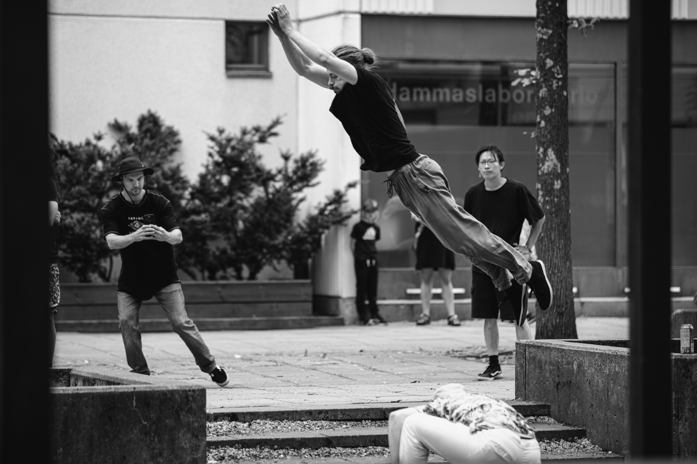

Mikä ihmeen parkour?
Parkour on urbaani liikuntamuoto, joka sai alkunsa Ranskassa. Lajissa keskitytään liikkumiseen ympäristössä ilman apuvälineiden käyttöä ja harrastaja pyrkii etenemään esteiden yli mahdollisimman sulavasti, tehokkaasti tai myös näyttävästi. Lajin perustekniikoita ovat juokseminen, hyppääminen, kiipeäminen, tasapainoilu sekä roikkuminen. Nämä liikkeet muodostavat parkourin perustan. Vaikka perusliikkeitä on vain muutamia, niiden yksinkertaisuus antaa harrastajalle mahdollisuuden luovaan soveltamiseen erilaisissa ympäristöissä. Parkourin monipuolisuus syntyy siitä, kuinka näitä perusliikkeitä voidaan yhdistellä eri tilanteisiin ja kuinka laji toimii myös itseilmaisun muotona, ei vain pelkkänä liikuntana.
Kuka voi harrastaa parkouria?
Lajina parkour sopii jokaiselle iästä, kuntotasosta tai aikaisemmasta urheilutaustasta riippumatta. Lajin aloittaminen on todella helppoa, tarvitset vain vaatteet sekä jalkineet. Harjoittelun voi aloittaa kaupunkiympäristössä, luonnossa tai parkoursaleissa. Tärkeintä parkourissa ei ole fyysinen lähtötaso, vaan avoin mieli, halu oppia uutta sekä itsensä haastaminen erilaisissa haasteissa!
